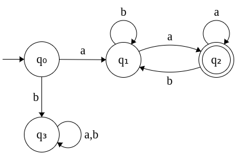
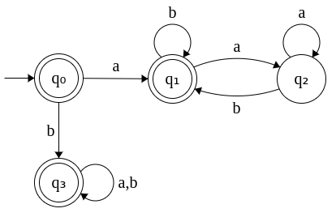

| Prev | Next |
Properties of Regular Languages
So far we have seen different ways of specifying regular language: DFA, NFA, ε-NFA, regular expressions and regular grammar. We noted that all these different expressions are equal in power by showing the equivalences. Regular expressions and grammars are considered as generators of regular language while the machines (DFA, NFA, ε-NFA) are considered as acceptors of the language.
Now we will look at the properties of regular language. The properties can be broadly classified as two parts: (A) Closure properties and (B) Decision properties
(A) Closure Properties
1. Complementation
If a language L is regular its complement L' is regular.
Let DFA(L) denote the DFA for the language L. Modify the DFA as follows to obtain DFA(L').
- Change the final states to non-final states.
- Change the non-final states to final states.
Since there exists a DFA(L') now, L' is regular.
This can be shown by an example using a DFA. Let L denote the language containing strings that begins and ends with a. Σ = {a, b}. The DFA for L is given below.
|  |
Note: q3 denotes the dead state. |
L' denotes the language that does not contain strings that begin and end with a. This implies L' contains strings that
- begins with a and ends with b
- begins with b and ends with a
- begins with b and ends with b
The DFA for L' is obtained by flipping the final states of DFA(L) to non-final states and vice-versa. The DFA for L' is given below.
|  |
|
Important Note: While specifying the DFA for L, we have also included the dead state q3. It is important to include the dead state(s) if we are going to derive the complement DFA since, the dead state(s) too would become final in the complementation. If we didn't add the dead state(s) originally, the complement will not accept all strings supposed to be accepted.
In the above example, if we didn't include q3 originally, the complement will not accept strings starting with b. It will only accept strings that begin with a and end with b which is only a subset of the complement.
CONCLUSION: REGULAR LANGUAGES ARE CLOSED UNDER COMPLEMENTATION.
2. Union
If L1 and L2 are regular, then L1 ∪ L2 is regular.
This is easier proved using regular expressions. If L1 is regular, there exists a regular expression R1 to describe it. Similarly, if L2 is regular, there exists a regular expression R2 to describe it. R1 + R2 denotes the regular expression that describe L1 ∪ L2. Therefore, L1 ∪ L2 is regular.
This again can be shown using an example. If L1 is a language that contains strings that begin with a and L2 is a language that contain strings that end with a, then L1 ∪ L2 denotes the language the contain strings that either begin with a or end with a.
- a(a+b)* is the regular expression that denotes L1.
- (a+b)*a is the regular expression that denotes L2.
- L1 ∪ L2 is denoted by the regular expression a(a+b)* + (a+b)*a. Therefore, L1 ∪ L2 is regular.
In terms of DFA, we can say that a DFA(L1 ∪ L2) accepts those strings that are accepted by either DFA(L1) or DFA(L2) or both.
- DFA(L1 ∪ L2) can be constructed by adding a new start state and new final state.
- The new start state connects to the two start states of DFA(L1) and DFA(L2) by εtransitions.
- Similarly, two ε transitions are added from the final states of DFA(L1) and DFA(L2) to the new final state.
- Convert this resulting NFA to its equivalent DFA.
As an exercise you can try this approach of DFA construction for union for the given example.
CONCLUSION: REGULAR LANGUAGES ARE CLOSED UNDER UNION.
3. Intersection
If L1 and L2 are regular, then L1 ∩ L2 is regular.
Since a language denotes a set of (possibly infinite) strings and we have shown above that regular languages are closed under union and complementation, by De Morgan's law can be applied to show that regular languages are closed under intersection too.
L1 and L2 are regular ⇒ L1' and L2' are regular
(by Complementation property)
L1' ∪ L2' is regular (by Union property)
L1 ∩ L2 is regular (by De Morgan's law)
In terms of DFA, we can say that a DFA(L1 ∩ L2) accepts those strings that are accepted by both DFA(L1) and DFA(L2).
CONCLUSION: REGULAR LANGUAGES ARE CLOSED UNDER INTERSECTION.
4. Concatenation
If L1 and L2 are regular, then L1 . L2 is regular.
This can be easily proved by regular expressions. If R1 is a regular expression denoting L1 and R2 is a regular expression denoting L2, then we R1 . R2 denotes the regular expression denoting L1 . L2. Therefore, L1 . L2 is regular.
In terms of DFA, we can say that a DFA(L1 . L2) can be constructed by adding an ε-trainstion from the final state of DFA(L1) - which now ceases to be the final state - to the start state of DFA(L2). You can try showing this using an example.
CONCLUSION: REGULAR LANGUAGES ARE CLOSED UNDER CONCATENATION.
5. Kleene star
If L is regular, then L* is regular.
This can be easily proved by regular expression. If L is regular, then there exists a regular expression R. We know that if R is a regular expression, R* is a regular expression too. R* denotes the language L*. Therefore L* is regular.
In terms of DFA, in the DFA(L) we add two ε transitions, one from start state to final state and another from final state to start state. This denotes DFA(L*). You can try showing this for an example.
CONCLUSION: REGULAR LANGUAGES ARE CLOSED UNDER KLEENE STAR.
6. Difference
If L1 and L2 are regular, then L1 - L2 is regular.
We know that L1 - L2 = L1 ∩ L2'
L1 and L2 are regular ⇒ L1 and L2' are regular
(by Complementation property)
L1 ∩ L2' is regular (by Intersection property)
L1 - L2 is regular (by De Morgan's law)
In terms of DFA, we can say that a DFA(L1 - L2) accepts those strings that are accepted by both DFA(L1) and not accepted by DFA(L2). You can try showing this for an example.
CONCLUSION: REGULAR LANGUAGES ARE CLOSED UNDER DIFFERENCE.
7. Reverse
If L is regular, then LR is regular.
Let DFA(L) denote the DFA of L. Make the following modifications to construct DFA(LR).
- Change the start state of DFA(L) to the final state.
- Change the final state of DFA(L) to the start state.
- Reverse the direction of the arrows.
In case there are more than one final state in DFA(L), first add a new final state and add ε- transitions from the final states (which now cease to be final states any more) and perform this step.
You can try showing this using an example.
CONCLUSION: REGULAR LANGUAGES ARE CLOSED UNDER REVERSAL.
(B) Decision Properties
1. Membership question
Does a string w belong to L? i.e. Is w ∈ L?
This can be validated as follows.
- Construct DFA(L).
- Run w on DFA(L).
- If DFA(L) accepts w, then w ∈ L. Else w ∉ L.
CONCLUSION: MEMBERSHIP QUESTION IN REGULAR LANGUAGES IS DECIDABLE.
2. Emptiness question
Is L = φ?
This can be validated as follows.
- Construct DFA(L).
- If there exists no path from start state to final state, L = φ. Else L ≠ φ.
CONCLUSION: EMPTINESS OF REGULAR LANGUAGES IS DECIDABLE.
3. Equivalence question
Is L1 = L2?
This can be validated as follows.
- Construct DFA(L1) and DFA(L2).
- Reduce them to their minimal DFAs: MinDFA(L1) and MinDFA(L2).
- If MinDFA(L1) = MinDFA(L2) then L1 = L2. Else L1 ≠ L2.
CONCLUSION: EQUIVALENCE OF REGULAR LANGUAGES IS DECIDABLE.
4. Subset question
Is L1 ⊂ L2?
This can be validated as follows.
- If (L1 - L2) = φ and (L2 - L1) ≠ φ then L1 ⊂ L2. Else L1 ⊄ L2.
CONCLUSION: SUBSET PROPERTY OF REGULAR LANGUAGES IS DECIDABLE.
5. Infinite question
Is L infinite?
This can be validated as follows.
- Construct DFA(L).
- If DFA(L) has at least one loop, then L is infinite. Else L finite.
CONCLUSION: INFINITE PROPERTY OF REGULAR LANGUAGES IS DECIDABLE.